<!doctype html>
<html lang="zh-Hant">
<head>
<meta charset="utf-8">
<meta name="viewport" content="width=device-width, initial-scale=1">
<title>SceneArc 使用說明</title>
<meta name="description" content="SceneArc 播放器的基礎與進階使用說明">
<link rel="icon" href="img/mark.svg">
<link rel="preconnect" href="https://fonts.googleapis.com">
<link rel="preconnect" href="https://fonts.gstatic.com" crossorigin>
<link href="https://fonts.googleapis.com/css2?family=Outfit:wght@400;500;600;700&family=Noto+Sans+TC:wght@400;500;700&display=swap" rel="stylesheet">
<style>
/* Same tokens as the player (ui/app.css): frosted light glass, ink text, blue accent; 石墨黑 in dark mode. */
:root {
  --ink: #0E1726; --ink-2: #1E293B; --ink-3: #334155; --muted: #4A5568;
  --ground: #E8EDF4; --accent: #1D4ED8; --accent-ink: #1E3A8A; --accent-soft: rgba(29,78,216,.10);
  --w: 255,255,255; --k: 14,23,38;
  --hi-line: #FFFFFF; --on-ink: #FFFFFF;
  --orb1: #A5C8FF; --orb2: #FBCFE8; --orb3: #BFF0E0; --orb-op: .9;
  --warn-bg: #FFF4E5; --warn-ink: #8A4B00; --bad: #B42318; --ok: #157F3B;
  --code-bg: rgba(14,23,38,.06);
  --shadow: inset 0 1px 0 var(--hi-line), 0 1px 2px rgba(20,30,60,.06), 0 24px 60px rgba(40,60,110,.12);
  --radius-panel: 32px;
  color-scheme: light;
  font-family: 'Outfit', 'Noto Sans TC', 'Microsoft JhengHei UI', 'Segoe UI', sans-serif;
  color: var(--ink);
}
@media (prefers-color-scheme: dark) {
  :root:not([data-theme="light"]) {
    --ink: #F5F5F7; --ink-2: #E5E5EA; --ink-3: #C7C7CC; --muted: #A1A1A8;
    --ground: #0F0F11; --accent: #8AB4FF; --accent-ink: #B9D1FF; --accent-soft: rgba(138,180,255,.14);
    --w: 44,44,46; --k: 255,255,255; --hi-line: rgba(255,255,255,.07); --on-ink: #0F0F11;
    --orb1: #2A2A2E; --orb2: #1E1E22; --orb3: #26262B; --orb-op: .45;
    --warn-bg: rgba(255,195,107,.12); --warn-ink: #FFC36B; --bad: #FF8A8A; --ok: #6EE7A0;
    --code-bg: rgba(255,255,255,.08);
    --shadow: inset 0 1px 0 var(--hi-line), 0 1px 2px rgba(0,0,0,.3), 0 24px 60px rgba(0,0,0,.35);
    color-scheme: dark;
  }
}
:root[data-theme="dark"] {
  --ink: #F5F5F7; --ink-2: #E5E5EA; --ink-3: #C7C7CC; --muted: #A1A1A8;
  --ground: #0F0F11; --accent: #8AB4FF; --accent-ink: #B9D1FF; --accent-soft: rgba(138,180,255,.14);
  --w: 44,44,46; --k: 255,255,255; --hi-line: rgba(255,255,255,.07); --on-ink: #0F0F11;
  --orb1: #2A2A2E; --orb2: #1E1E22; --orb3: #26262B; --orb-op: .45;
  --warn-bg: rgba(255,195,107,.12); --warn-ink: #FFC36B; --bad: #FF8A8A; --ok: #6EE7A0;
  --code-bg: rgba(255,255,255,.08);
  --shadow: inset 0 1px 0 var(--hi-line), 0 1px 2px rgba(0,0,0,.3), 0 24px 60px rgba(0,0,0,.35);
  color-scheme: dark;
}
* { box-sizing: border-box; }
html { scroll-behavior: smooth; scroll-padding-top: 120px; }
@media (prefers-reduced-motion: reduce) { html { scroll-behavior: auto; } }
body { margin: 0; background: var(--ground); line-height: 1.75; font-size: 16px; -webkit-font-smoothing: antialiased; }
a { color: var(--accent); text-underline-offset: 3px; }
a:hover { color: var(--accent-ink); }
:focus-visible { outline: 3px solid var(--accent); outline-offset: 3px; border-radius: 6px; }
img { max-width: 100%; display: block; }
code, kbd { font-family: 'Cascadia Mono', Consolas, monospace; font-size: .86em; }
code { background: var(--code-bg); padding: .1em .4em; border-radius: 6px; word-break: break-all; }

/* soft colour orbs behind the glass, like the player's home screen */
.orbs { position: fixed; inset: 0; overflow: hidden; pointer-events: none; z-index: 0; }
.orbs i { position: absolute; border-radius: 50%; opacity: var(--orb-op);
  background: radial-gradient(closest-side, var(--o) 0%, var(--o) 22%, color-mix(in srgb, var(--o) 40%, transparent) 60%, transparent 100%); }
.orbs i:nth-child(1) { --o: var(--orb1); width: 1200px; height: 1000px; left: -420px; top: -420px; }
.orbs i:nth-child(2) { --o: var(--orb2); width: 1000px; height: 1000px; right: -340px; top: -360px; }
.orbs i:nth-child(3) { --o: var(--orb3); width: 1200px; height: 900px; left: 30%; bottom: -520px; }

.glass { background: rgba(var(--w),.55); border: 1px solid rgba(var(--w),.85); box-shadow: var(--shadow);
  backdrop-filter: blur(30px) saturate(180%); -webkit-backdrop-filter: blur(30px) saturate(180%); }

/* top bar: logo · 基礎/進階 pill · theme button */
.top { position: sticky; top: 0; z-index: 5; background: color-mix(in srgb, var(--ground) 72%, transparent);
  backdrop-filter: blur(24px) saturate(160%); -webkit-backdrop-filter: blur(24px) saturate(160%); border-bottom: 1px solid rgba(var(--k),.06); padding: 20px 40px 16px; display: grid; grid-template-columns: minmax(0,1fr) auto minmax(0,1fr); align-items: center; gap: 20px; }
.brand { display: flex; align-items: center; gap: 12px; text-decoration: none; color: var(--ink); min-width: 0; }
.brand img { width: 44px; height: 44px; flex: none; }
.brand b { font-size: 20px; font-weight: 700; letter-spacing: .01em; white-space: nowrap; }
.brand span { color: var(--muted); font-size: 14px; white-space: nowrap; }
.cats { display: flex; gap: 6px; padding: 6px; border-radius: 30px; }
.cat { height: 48px; padding: 0 26px; border-radius: 24px; font: inherit; font-size: 18px; font-weight: 600; color: var(--ink-3); background: none; border: 0; cursor: pointer;
  display: inline-flex; align-items: center; gap: 8px; white-space: nowrap; transition: background-color .15s, color .15s; }
.cat:hover { background: rgba(var(--w),.75); color: var(--ink); }
.cat[aria-selected="true"] { background: var(--ink); color: var(--on-ink); box-shadow: 0 8px 20px rgba(14,23,38,.25); }
.cat small { font-size: 13px; font-weight: 500; opacity: .7; }
.top-right { display: flex; justify-content: flex-end; }
.icon-btn { width: 52px; height: 52px; border-radius: 18px; display: inline-flex; align-items: center; justify-content: center; color: var(--ink-3); background: none; border: 0; cursor: pointer; }
.icon-btn:hover { color: var(--ink); background: rgba(var(--w),.8); }

/* panel: settings-style side nav + content */
.wrap { position: relative; z-index: 1; padding: 24px 40px 48px; }
.panel { max-width: 1320px; margin: 0 auto; border-radius: var(--radius-panel); display: grid; grid-template-columns: 250px minmax(0,1fr); overflow: clip; }
.side { border-right: 1px solid rgba(var(--k),.08); padding: 26px 18px; }
.side-in { position: sticky; top: 112px; }
.side h2 { font-size: 13px; font-weight: 600; color: var(--muted); margin: 0 12px 10px; letter-spacing: .04em; }
.toc { list-style: none; margin: 0; padding: 0; display: flex; flex-direction: column; gap: 2px; position: relative; }
.toc a { display: flex; align-items: center; gap: 10px; padding: 9px 14px; border-radius: 14px; text-decoration: none; color: var(--ink-2); font-weight: 600; font-size: 15px; line-height: 1.35; }
.toc a:hover { background: rgba(var(--w),.75); color: var(--ink); }
.toc a.on { background: var(--ink); color: var(--on-ink); box-shadow: 0 8px 18px rgba(14,23,38,.22); }
.toc .n { font-size: 12px; opacity: .6; min-width: 16px; }
.content { padding: 34px 44px 56px; min-width: 0; }
.tab[hidden] { display: none; }

.hero { padding: 6px 0 22px; border-bottom: 1px solid rgba(var(--k),.08); margin-bottom: 8px; }
.hero h1 { font-size: 40px; line-height: 1.2; margin: 0 0 10px; letter-spacing: .01em; }
.hero p { margin: 0; color: var(--ink-3); font-size: 17px; max-width: 760px; }
.eyebrow { font-size: 13px; font-weight: 700; letter-spacing: .14em; color: var(--accent); margin-bottom: 6px; }

section.s { padding-top: 34px; }
section.s > h2 { font-size: 26px; margin: 0 0 6px; display: flex; align-items: baseline; gap: 12px; line-height: 1.3; }
section.s > h2 .n { font-size: 15px; color: var(--accent); font-weight: 700; }
section.s > .lead { color: var(--ink-3); margin: 0 0 18px; max-width: 820px; }
h3 { font-size: 18px; margin: 26px 0 8px; }
p { margin: 0 0 12px; }
ul, ol { margin: 0 0 14px; padding-left: 1.4em; }
li { margin: 4px 0; }
b, strong { font-weight: 700; }

/* settings-style cards and rows (ol-card / ol-row in the player) */
.card { background: rgba(var(--w),.6); border: 1px solid rgba(var(--w),.9); border-radius: 22px; margin: 14px 0; overflow: hidden; }
.card > .gh { font-size: 13px; font-weight: 600; color: var(--muted); padding: 12px 20px 10px; border-bottom: 1px solid rgba(var(--k),.07); }
.row { display: grid; grid-template-columns: minmax(150px, 230px) minmax(0,1fr); gap: 8px 24px; padding: 14px 20px; border-top: 1px solid rgba(var(--k),.07); }
.row:first-child, .card > .gh + .row { border-top: 0; }
.row > dt { font-weight: 700; color: var(--ink); }
.row > dd { margin: 0; color: var(--ink-2); }
.row > dd p:last-child { margin-bottom: 0; }
.opt { display: inline-block; padding: 1px 10px; border-radius: 999px; background: rgba(var(--k),.07); font-size: 14px; font-weight: 600; color: var(--ink-2); margin: 2px 2px 2px 0; white-space: nowrap; }
.opt.def::after { content: '預設'; font-size: 11px; font-weight: 700; color: var(--accent); margin-left: 6px; }
.tech { font-size: 12px; font-weight: 600; color: var(--muted); margin-left: 6px; }
.path { font-family: 'Cascadia Mono', Consolas, monospace; font-size: 14px; }

/* breadcrumb "設定 › 影像 › 補幀" */
.crumb { display: inline-flex; flex-wrap: wrap; align-items: center; gap: 4px; font-size: 14px; font-weight: 600; color: var(--accent);
  background: var(--accent-soft); padding: 2px 12px; border-radius: 999px; margin: 0 0 12px; }
.crumb i { font-style: normal; opacity: .6; }

/* notes */
.note { border-radius: 18px; padding: 14px 18px; margin: 14px 0; display: flex; gap: 12px; align-items: flex-start; background: var(--accent-soft); color: var(--ink-2); }
.note svg { flex: none; margin-top: 4px; color: var(--accent); }
.note.warn { background: var(--warn-bg); }
.note.warn svg { color: var(--warn-ink); }
.note p:last-child { margin: 0; }

/* steps */
.steps { list-style: none; counter-reset: s; padding: 0; margin: 14px 0; }
.steps > li { counter-increment: s; position: relative; padding: 2px 0 14px 48px; margin: 0; }
.steps > li::before { content: counter(s); position: absolute; left: 0; top: 0; width: 32px; height: 32px; border-radius: 50%;
  background: var(--ink); color: var(--on-ink); font-weight: 700; font-size: 15px; display: flex; align-items: center; justify-content: center; }
.steps > li::after { content: ''; position: absolute; left: 15px; top: 36px; bottom: 2px; width: 2px; background: rgba(var(--k),.1); }
.steps > li:last-child::after { display: none; }

/* screenshots */
figure { margin: 18px 0 22px; }
.shot { position: relative; border-radius: 20px; overflow: hidden; border: 1px solid rgba(var(--k),.1); box-shadow: 0 18px 44px rgba(40,60,110,.16); background: #0E1726; }
.shot img { width: 100%; height: auto; }
.shot-strip { max-width: 720px; margin: 0 auto; }
figcaption { font-size: 14px; color: var(--muted); margin-top: 8px; text-align: center; }
.pin { position: absolute; transform: translate(-50%, -50%); width: 26px; height: 26px; border-radius: 50%; background: #F0609E; color: #FFFFFF;
  font-size: 13px; font-weight: 700; display: flex; align-items: center; justify-content: center; box-shadow: 0 0 0 3px rgba(255,255,255,.9), 0 4px 10px rgba(0,0,0,.35); }
.legend { list-style: none; padding: 0; margin: 10px 0 0; display: grid; grid-template-columns: repeat(auto-fill, minmax(250px, 1fr)); gap: 6px 18px; }
.legend li { display: flex; gap: 10px; align-items: baseline; margin: 0; }
.legend b.k { flex: none; width: 22px; height: 22px; border-radius: 50%; background: #F0609E; color: #FFFFFF; font-size: 12px; display: inline-flex; align-items: center; justify-content: center; transform: translateY(2px); }

/* keyboard table */
.keys { display: grid; grid-template-columns: repeat(auto-fill, minmax(280px, 1fr)); gap: 0 28px; margin: 12px 0; }
.keys div { display: flex; justify-content: space-between; gap: 16px; padding: 10px 2px; border-bottom: 1px solid rgba(var(--k),.08); }
kbd { display: inline-block; min-width: 26px; text-align: center; padding: 1px 8px; border-radius: 8px; background: rgba(var(--w),.95); border: 1px solid rgba(var(--k),.16);
  box-shadow: 0 2px 0 rgba(var(--k),.14); color: var(--ink); font-weight: 600; margin: 0 1px; white-space: nowrap; }
.keys span:last-child { color: var(--ink-3); text-align: right; }

/* plain tables (naming examples) */
.tbl { width: 100%; border-collapse: collapse; margin: 12px 0; font-size: 15px; }
.tbl th, .tbl td { text-align: left; padding: 10px 12px; border-bottom: 1px solid rgba(var(--k),.08); vertical-align: top; }
.tbl th { font-size: 13px; color: var(--muted); font-weight: 600; }
.tbl-wrap { overflow-x: auto; border-radius: 18px; background: rgba(var(--w),.6); border: 1px solid rgba(var(--w),.9); padding: 4px 8px; }

/* online-data flow: four steps left to right */
.flow { display: grid; grid-template-columns: repeat(4, minmax(0,1fr)); gap: 14px; margin: 14px 0 18px; counter-reset: f; }
.flow-step { position: relative; background: rgba(var(--w),.6); border: 1px solid rgba(var(--w),.9); border-radius: 20px; padding: 16px 16px 14px; }
.flow-step > b { display: flex; align-items: center; gap: 10px; font-size: 16px; margin-bottom: 8px; }
.flow-step > b span { width: 28px; height: 28px; flex: none; border-radius: 50%; background: var(--ink); color: var(--on-ink); font-size: 14px; display: inline-flex; align-items: center; justify-content: center; }
.flow-step p { margin: 0; font-size: 14.5px; color: var(--ink-2); line-height: 1.7; }
.flow-step:not(:last-child)::after { content: '›'; position: absolute; right: -12px; top: 18px; font-size: 22px; font-weight: 700; color: var(--accent); }
@media (max-width: 1360px) { .flow { grid-template-columns: repeat(2, minmax(0,1fr)); } .flow-step:nth-child(2)::after { display: none; } }
@media (max-width: 720px) { .flow { grid-template-columns: 1fr; } .flow-step::after { display: none; } }

.locked-badge { display: inline-block; font-size: 13px; font-weight: 700; color: var(--bad); border: 1.5px solid currentColor; border-radius: 999px; padding: 0 10px; margin-left: 8px; vertical-align: 3px; }
.next { display: flex; justify-content: flex-end; margin-top: 40px; }
.next button { font: inherit; font-weight: 700; font-size: 16px; color: var(--on-ink); background: var(--ink); border: 0; border-radius: 999px; padding: 12px 26px; cursor: pointer; box-shadow: 0 8px 20px rgba(14,23,38,.22); }
.foot { max-width: 1320px; margin: 18px auto 0; text-align: center; color: var(--muted); font-size: 13px; }

@media (max-width: 1080px) {
  .brand span { display: none; }
  .top { padding: 16px 24px 12px; }
  .panel { grid-template-columns: minmax(0,1fr); }
  .side { min-width: 0; border-right: 0; border-bottom: 1px solid rgba(var(--k),.08); padding: 14px 16px; }
  .side-in { position: static; }
  .side h2 { display: none; }
  .toc { flex-direction: row; overflow-x: auto; scrollbar-width: none; }
  .toc a { white-space: nowrap; }
  .content { padding: 26px 24px 44px; }
}
@media (max-width: 720px) {
  .top { grid-template-columns: 1fr auto; padding: 14px 16px 10px; gap: 10px; }
  .brand span { display: none; }
  .cats { grid-column: 1 / -1; grid-row: 2; justify-self: stretch; }
  .cat { flex: 1; justify-content: center; height: 44px; font-size: 16px; padding: 0 12px; }
  .wrap { padding: 4px 16px 32px; }
  .panel { border-radius: 24px; }
  .content { padding: 22px 18px 36px; }
  .hero h1 { font-size: 30px; }
  section.s > h2 { font-size: 22px; }
  .row { grid-template-columns: 1fr; gap: 4px; }
  .pin { width: 20px; height: 20px; font-size: 11px; }
}
@media print {
  .top, .side, .orbs, .next { display: none !important; }
  .tab[hidden] { display: block !important; }
  .panel { display: block; box-shadow: none; border: 0; background: none; }
  body { background: #FFFFFF; }
}
</style>
</head>
<body>
<div class="orbs" aria-hidden="true"><i></i><i></i><i></i></div>

<header class="top">
  <a class="brand" href="#top" aria-label="SceneArc 使用說明首頁">
    
    <b>SceneArc</b><span>使用說明 · v0.1.0-beta</span>
  </a>
  <nav class="cats glass" role="tablist" aria-label="說明分類">
    <button class="cat" role="tab" id="tab-basic" aria-controls="basic" aria-selected="true" data-tab="basic">基礎<small>第一次使用</small></button>
    <button class="cat" role="tab" id="tab-advanced" aria-controls="advanced" aria-selected="false" data-tab="advanced">進階<small>畫質與音質</small></button>
  </nav>
  <div class="top-right">
    <button class="icon-btn glass" id="theme-btn" type="button" aria-label="切換深色／淺色" title="切換深色／淺色">
      <svg width="22" height="22" viewBox="0 0 24 24" fill="none" stroke="currentColor" stroke-width="2" stroke-linecap="round" stroke-linejoin="round" aria-hidden="true"><path d="M21 12.8A9 9 0 1 1 11.2 3a7 7 0 0 0 9.8 9.8z"/></svg>
    </button>
  </div>
</header>

<div class="wrap" id="top">
<main class="panel glass">
  <aside class="side">
    <div class="side-in">
      <h2 id="toc-title">本頁內容</h2>
      <ul class="toc" id="toc" aria-labelledby="toc-title"></ul>
    </div>
  </aside>

  <div class="content">

<!-- ======================================================================= 基礎 -->
<div class="tab" id="basic" role="tabpanel" aria-labelledby="tab-basic">
  <div class="hero">
    <div class="eyebrow">基礎</div>
    <h1>從安裝到看完第一部片</h1>
    <p>SceneArc 是在 Windows 上整理與播放「自己電腦裡的影片」的播放器：把存放影片的資料夾加進來，它會依片名與集數排好電影和影集、記住看到哪裡，並以 mpv 核心播放。這一頁照著第一次使用的順序說明，大約 10 分鐘可以讀完。</p>
  </div>

  <section class="s" id="b-install" data-title="安裝與第一次啟動">
    <h2><span class="n">01</span>安裝與第一次啟動</h2>
    <p class="lead">安裝檔是單一 exe，不需要系統管理員權限。</p>
    <ol class="steps">
      <li>雙擊 <code>SceneArc-Setup-0.1.0-beta.exe</code>，依畫面按「下一步」。安裝位置預設為 <span class="path">%LOCALAPPDATA%\Programs\SceneArc</span>，可以勾選建立桌面捷徑。</li>
      <li>如果電腦缺少需要的元件，安裝程式會自動處理：
        <ul>
          <li><b>Microsoft Visual C++ 執行階段</b>：版本太舊或沒有時會自動安裝，可能跳出一次系統權限確認。</li>
          <li><b>Microsoft Edge WebView2 Runtime</b>：介面需要它。Windows 11 已內建；若缺少，安裝程式會提示開啟 Microsoft 的下載頁面。</li>
        </ul>
      </li>
      <li>安裝完成後從「開始」功能表或桌面捷徑開啟 <b>SceneArc</b>。第一次開啟時媒體庫是空的，下一節說明怎麼把影片加進來。</li>
    </ol>
    <div class="note"><svg width="20" height="20" viewBox="0 0 24 24" fill="none" stroke="currentColor" stroke-width="2" stroke-linecap="round" aria-hidden="true"><circle cx="12" cy="12" r="9"/><path d="M12 11v6M12 7.5v.5"/></svg>
      <p>SceneArc 把設定（<code>config.json</code>）和播放進度、快取、紀錄（<code>data</code> 資料夾）存放在安裝資料夾內。升級安裝會保留它們；解除安裝時會詢問是否一起刪除，選「否」就能在重新安裝後沿用。</p></div>
  </section>

  <section class="s" id="b-library" data-title="加入媒體庫">
    <h2><span class="n">02</span>加入媒體庫</h2>
    <p class="lead">「媒體庫」是一組放影片的資料夾，會出現在畫面頂端成為一個分頁（例如「電影」、「動畫」、「影集」）。</p>
    <div class="crumb">設定 <i>›</i> 媒體庫</div>
    <ol class="steps">
      <li>按右上角的 <b>設定</b> 圖示（三條滑桿），左側選 <b>媒體庫</b>。</li>
      <li>按清單最後的 <b>新增媒體庫</b>，進入這個媒體庫的頁面。</li>
      <li>填入 <b>名稱</b>，選擇 <b>類型</b>：<span class="opt">電影</span>每個檔案是一部作品；<span class="opt">影集</span>依資料夾與檔名分成作品、季和集。</li>
      <li>按 <b>＋ 加入資料夾</b> 選擇放影片的資料夾。同一個媒體庫可以加入多個資料夾，例如兩顆硬碟各一個。</li>
      <li>返回後播放器會自動重新掃描，不需要另外按儲存。媒體庫最多可以建立 8 個。</li>
    </ol>
    <figure><div class="shot">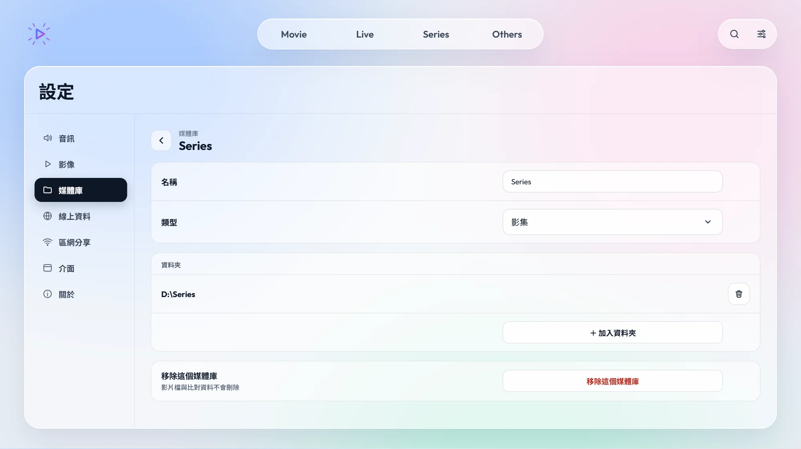</div>
      <figcaption>媒體庫的編輯頁：名稱、類型、資料夾。「移除這個媒體庫」只會從播放器移除，不會刪除影片檔。</figcaption></figure>

    <h3>影集檔案怎麼命名比較好</h3>
    <p>影集媒體庫會從資料夾名稱判斷作品與季別，從檔名判斷集數。建議一部作品一個資料夾、每季一個子資料夾：</p>
    <div class="tbl-wrap"><table class="tbl">
      <thead><tr><th>建議的資料夾結構</th><th>說明</th></tr></thead>
      <tbody>
        <tr><td class="path">劇名\Season 1\劇名.S01E01.mkv</td><td>最穩定的寫法。季資料夾也可以寫成 <code>S2</code>、<code>第2季</code>、<code>2nd Season</code>。</td></tr>
        <tr><td class="path">劇名\劇名 第1集.mp4</td><td>只有一季時可以省略季資料夾。</td></tr>
        <tr><td class="path">劇名\[字幕組][劇名][01][1080P].mkv</td><td>常見的動畫發布檔名也能辨識。</td></tr>
      </tbody>
    </table></div>
    <p>能辨識的集數寫法包括 <code>S01E01</code>、<code>1x01</code>、<code>第1集</code>／<code>第1話</code>、<code>EP01</code>、<code>[01]</code>、<code> - 01</code>。支援 mkv、mp4、m4v、mov、avi、wmv、ts、m2ts、webm 等常見格式。</p>
  </section>

  <section class="s" id="b-browse" data-title="瀏覽與搜尋">
    <h2><span class="n">03</span>瀏覽與搜尋</h2>
    <p class="lead">畫面頂端是你建立的媒體庫，右上角是搜尋（也可以直接按 <kbd>/</kbd>）與設定。</p>

    <h3>首頁</h3>
    <figure><div class="shot">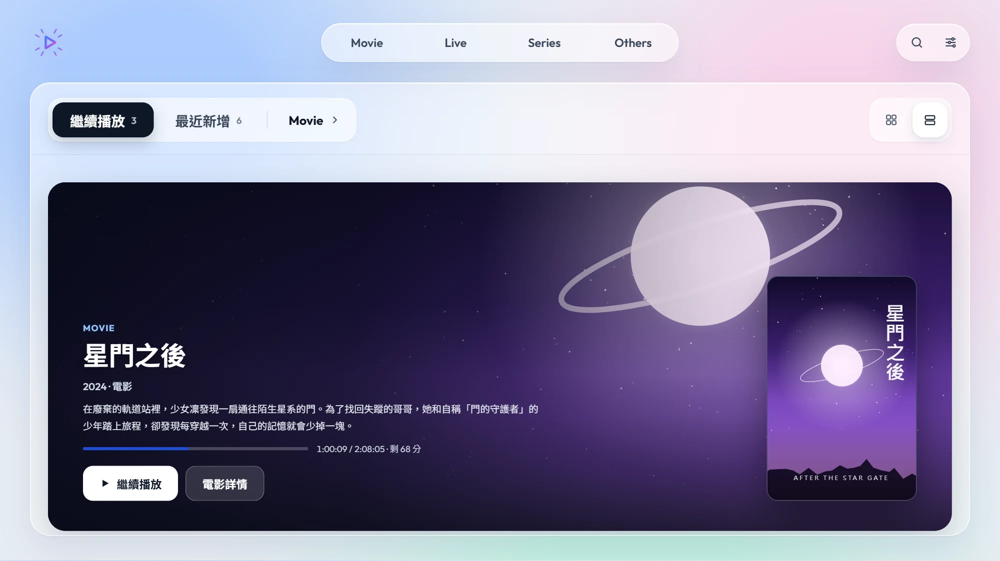</div>
      <figcaption>首頁的大圖顯示：每部作品一張背景大圖，附簡介、看到哪裡與「繼續播放」按鈕。</figcaption></figure>
    <ul>
      <li><b>繼續播放</b>：看到一半的影片，按「繼續播放」從上次的位置接著看。</li>
      <li><b>最近新增</b>：剛加入媒體庫的影片。</li>
      <li>右上的兩個按鈕切換 <b>格狀</b>（小卡片，一次看比較多）與 <b>大圖</b>（如上圖）。</li>
    </ul>
    <figure><div class="shot shot-strip">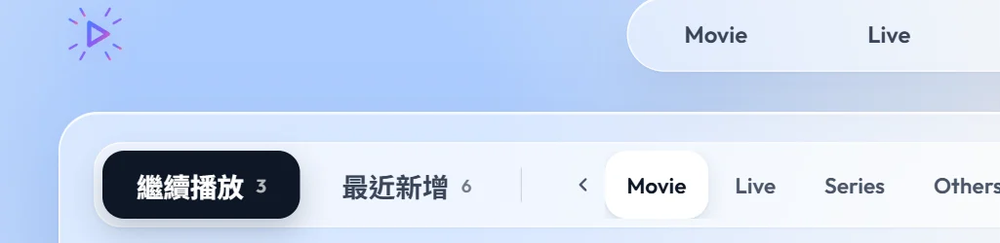</div>
      <figcaption>點分頁列最右邊的媒體庫名稱，會展開所有媒體庫，選一個就切換首頁顯示的內容。</figcaption></figure>
    <p>首頁一次只顯示一個媒體庫的「繼續播放」與「最近新增」。要看另一個媒體庫，點分頁列最右邊的媒體庫名稱（例如 <span class="opt">Movie ›</span>），從展開的清單中選擇即可。</p>

    <h3>媒體庫海報牆</h3>
    <figure><div class="shot">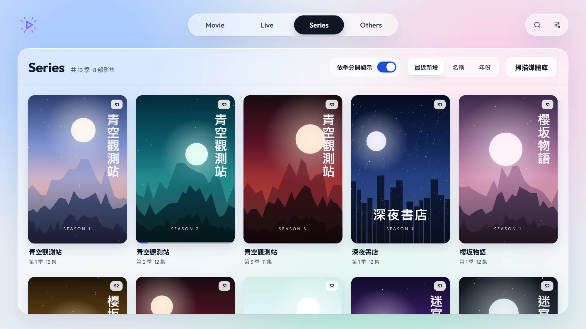</div>
      <figcaption>點畫面頂端的媒體庫名稱，就會以海報牆列出所有作品。</figcaption></figure>
    <div class="card"><dl>
      <div class="row"><dt>依季分開顯示</dt><dd>只有影集媒體庫有這個開關。開啟時每一季是一張海報（右上角標示 <span class="opt">S1</span><span class="opt">S2</span>）；關閉時一部作品只有一張海報。</dd></div>
      <div class="row"><dt>排序</dt><dd><span class="opt">最近新增</span><span class="opt">名稱</span><span class="opt">年份</span></dd></div>
      <div class="row"><dt>掃描媒體庫</dt><dd>重新讀取所有媒體庫的資料夾。在檔案總管裡新增或搬移影片後按一下，新的影片就會出現。</dd></div>
      <div class="row"><dt>海報下的進度條</dt><dd>代表看過的進度；海報下方的文字標示季數與集數。</dd></div>
    </dl></div>

    <h3>影集作品頁</h3>
    <figure><div class="shot">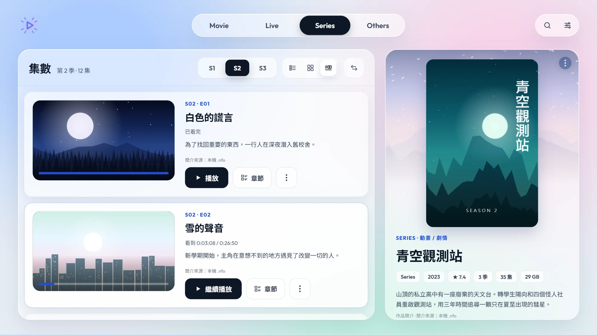</div>
      <figcaption>影集作品頁（大圖排列）。左邊是單集，右邊是作品資訊。</figcaption></figure>
    <div class="card"><dl>
      <div class="row"><dt>切換季</dt><dd>上方的 <span class="opt">S1</span><span class="opt">S2</span><span class="opt">S3</span> 切換要看哪一季。</dd></div>
      <div class="row"><dt>單集排列</dt><dd>旁邊三個按鈕切換 <b>清單</b>、<b>格狀</b> 與 <b>大圖</b>。大圖排列會顯示每集的劇照、標題與簡介，如上圖（開啟〈介面設定〉的「在詳情頁顯示檔案格式與大小」時也會顯示檔案大小）。</dd></div>
      <div class="row"><dt>左右對調</dt><dd>⇆ 按鈕把單集清單與作品資訊左右對調。</dd></div>
      <div class="row"><dt>播放／繼續播放</dt><dd>看到一半的單集會顯示「看到 0:03:08 / 0:26:50」與「繼續播放」。</dd></div>
      <div class="row"><dt>章節</dt><dd>展開章節縮圖，點縮圖就從那裡開始播放；看過的位置標示「上次看到這裡」。影片沒有章節時，可以選 <span class="opt">10 秒</span><span class="opt">30 秒</span><span class="opt">1 分</span><span class="opt">5 分</span> 的間隔產生預覽。</dd></div>
      <div class="row"><dt>⋮ 選單</dt><dd>例如標示已看完／未看，或把影片移至 Windows 資源回收筒。</dd></div>
      <div class="row"><dt>作品資訊</dt><dd>右側顯示海報、原文片名、TMDB／AniList／Bangumi 評分、簡介、製作人員與角色聲優。這些資料要開啟〈進階 › 線上資料〉才會出現。</dd></div>
    </dl></div>

    <h3>電影作品頁</h3>
    <figure><div class="shot">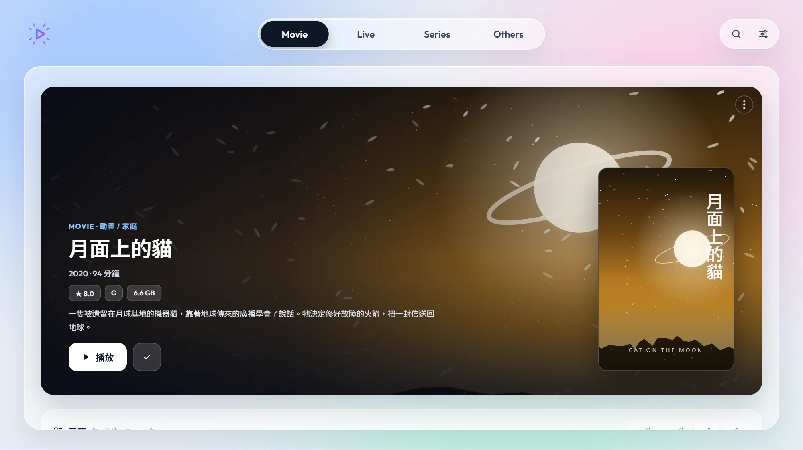</div>
      <figcaption>電影作品頁：大圖、評分與簡介，下方是章節列。</figcaption></figure>
    <ul>
      <li><b>▶ 播放</b> 從頭播放（看到一半時會變成「繼續播放」）；旁邊的 <b>✓</b> 標示為已看完。</li>
      <li>簡介太長時按「顯示全部」展開。</li>
      <li>下方的章節列和影集一樣，可以切換縮圖間隔，點縮圖跳到那個位置播放。</li>
    </ul>
  </section>

  <section class="s" id="b-play" data-title="播放畫面">
    <h2><span class="n">04</span>播放畫面</h2>
    <p class="lead">移動滑鼠時控制列會出現，幾秒不動會自動隱藏。</p>
    <figure>
      <div class="shot">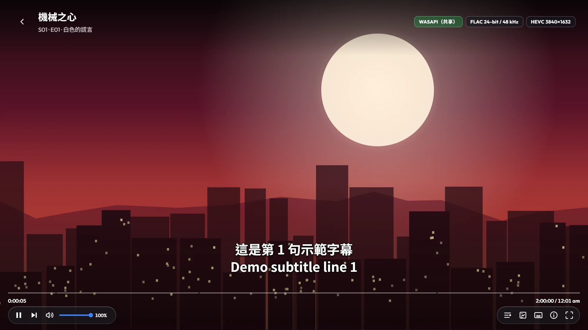
        <span class="pin" style="left:3.75%;top:6.5%">1</span>
        <span class="pin" style="left:69%;top:6.5%">2</span>
        <span class="pin" style="left:50%;top:84%">3</span>
        <span class="pin" style="left:4.5%;top:90%">4</span>
        <span class="pin" style="left:13%;top:90%">5</span>
        <span class="pin" style="left:86.3%;top:90%">6</span>
        <span class="pin" style="left:88.9%;top:90%">7</span>
        <span class="pin" style="left:91.5%;top:90%">8</span>
        <span class="pin" style="left:94.2%;top:90%">9</span>
        <span class="pin" style="left:96.8%;top:90%">10</span>
      </div>
      <ul class="legend">
        <li><b class="k">1</b><span>返回作品頁（或按 <kbd>Esc</kbd>）</span></li>
        <li><b class="k">2</b><span>目前的音訊輸出方式與影片格式；開啟完美位元輸出且成功時會顯示 BIT-PERFECT</span></li>
        <li><b class="k">3</b><span>進度列：點擊或拖曳跳轉，滑過會顯示時間預覽；刻度是章節</span></li>
        <li><b class="k">4</b><span>播放／暫停、下一集</span></li>
        <li><b class="k">5</b><span>音量與靜音（開啟完美位元輸出時音量固定 100%，請用擴大機調整）</span></li>
        <li><b class="k">6</b><span>章節清單</span></li>
        <li><b class="k">7</b><span>超解析放大開／關（需先在設定選好放大方法）</span></li>
        <li><b class="k">8</b><span>字幕選單</span></li>
        <li><b class="k">9</b><span>播放資訊：解碼、GPU、音訊、補幀與放大的實際狀態</span></li>
        <li><b class="k">10</b><span>全螢幕</span></li>
      </ul>
    </figure>
    <ul>
      <li>右下角的時間點一下可以切換「總長」與「剩餘時間」。</li>
      <li>影集播完一集時，右下角會出現下一集的提示；也可以隨時按 <kbd>N</kbd>。</li>
      <li>播放進度會自動記住，下次從「繼續播放」或作品頁接著看。</li>
    </ul>
  </section>

  <section class="s" id="b-subs" data-title="字幕">
    <h2><span class="n">05</span>字幕</h2>
    <figure><div class="shot">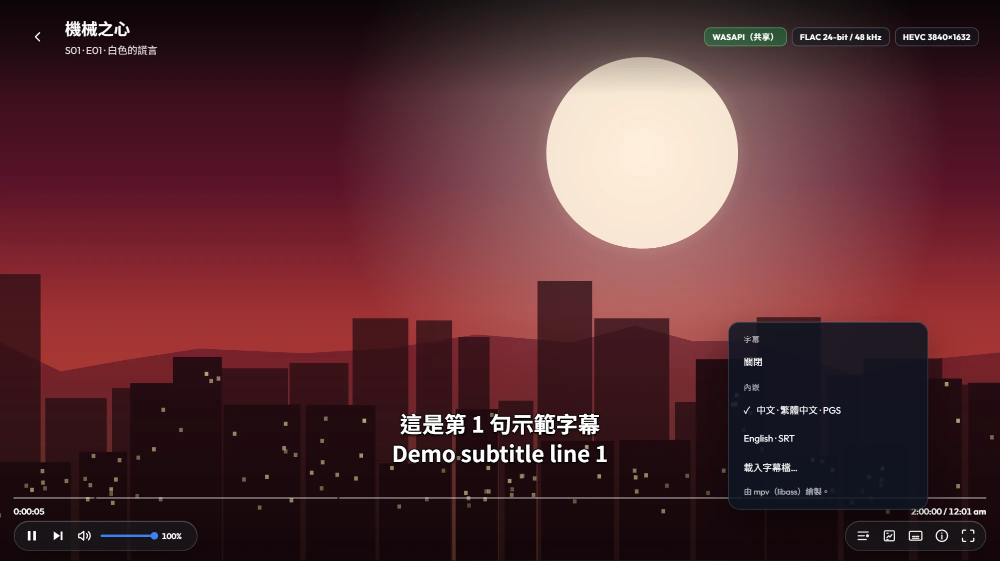</div>
      <figcaption>按字幕圖示或 <kbd>C</kbd> 開啟字幕選單。</figcaption></figure>
    <div class="card"><dl>
      <div class="row"><dt>內嵌字幕</dt><dd>影片檔裡的字幕軌，文字字幕（SRT、ASS）與圖形字幕（PGS 等）都可以。預設會優先選中文字幕。</dd></div>
      <div class="row"><dt>外掛字幕</dt><dd>和影片放在同一個資料夾、檔名以影片檔名開頭的 <code>.srt</code> <code>.ass</code> <code>.ssa</code> <code>.vtt</code> <code>.sup</code> 會自動列出，例如 <span class="path">劇名.S01E01.zh-TW.srt</span>。</dd></div>
      <div class="row"><dt>載入字幕檔</dt><dd>手動選擇任何位置的字幕檔。</dd></div>
      <div class="row"><dt>ASS 特效與字型</dt><dd>字幕由 mpv（libass）繪製，支援 ASS 特效。字幕指定的字型若電腦沒有安裝，可以把字型檔放到安裝資料夾的 <span class="path">data\fonts</span>，或影片旁的 <span class="path">fonts</span> 資料夾。</dd></div>
    </dl></div>
  </section>

  <section class="s" id="b-keys" data-title="鍵盤快捷鍵">
    <h2><span class="n">06</span>鍵盤快捷鍵</h2>
    <p class="lead">播放中按 <kbd>?</kbd> 可以隨時叫出這張表。</p>
    <div class="keys">
      <div><span><kbd>Space</kbd> <kbd>K</kbd></span><span>播放／暫停</span></div>
      <div><span><kbd>←</kbd> <kbd>→</kbd></span><span>倒轉／快轉 10 秒（加 Shift 為 60 秒）</span></div>
      <div><span><kbd>J</kbd> <kbd>L</kbd></span><span>倒轉／快轉 10 秒</span></div>
      <div><span><kbd>-</kbd> <kbd>=</kbd></span><span>音量 −5／+5</span></div>
      <div><span><kbd>M</kbd></span><span>靜音／取消靜音</span></div>
      <div><span><kbd>0</kbd>–<kbd>9</kbd></span><span>跳到 0%–90%</span></div>
      <div><span><kbd>Home</kbd> <kbd>End</kbd></span><span>從頭／片尾</span></div>
      <div><span><kbd>PgUp</kbd> <kbd>PgDn</kbd></span><span>上一章／下一章</span></div>
      <div><span><kbd>N</kbd></span><span>下一集</span></div>
      <div><span><kbd>C</kbd></span><span>字幕選單</span></div>
      <div><span><kbd>F</kbd>／雙擊畫面</span><span>全螢幕</span></div>
      <div><span><kbd>I</kbd></span><span>播放資訊</span></div>
      <div><span><kbd>U</kbd></span><span>超解析放大開／關</span></div>
      <div><span><kbd>Esc</kbd></span><span>關閉選單／返回</span></div>
      <div><span><kbd>/</kbd></span><span>搜尋（瀏覽畫面）</span></div>
      <div><span><kbd>F11</kbd></span><span>全螢幕（任何畫面）</span></div>
    </div>
  </section>

  <section class="s" id="b-ui" data-title="介面設定">
    <h2><span class="n">07</span>介面設定</h2>
    <div class="crumb">設定 <i>›</i> 介面</div>
    <div class="card"><dl>
      <div class="row"><dt>主題配色</dt><dd><span class="opt def">淺色</span><span class="opt">櫻花粉</span><span class="opt">夜幕暗紅</span><span class="opt">石墨黑</span></dd></div>
      <div class="row"><dt>預設視窗模式</dt><dd>開啟播放器時用 <span class="opt">全螢幕</span> 或 <span class="opt">視窗</span>。</dd></div>
      <div class="row"><dt>在詳情頁顯示檔案格式與大小</dt><dd>在作品頁顯示每個檔案的格式與容量。</dd></div>
      <div class="row"><dt>過場動畫</dt><dd>調整頁面切換動畫的速度。</dd></div>
    </dl></div>
  </section>

  <section class="s" id="b-faq" data-title="常見問題">
    <h2><span class="n">08</span>常見問題</h2>
    <h3>加入資料夾後看不到影片？</h3>
    <p>確認媒體庫的類型（電影／影集）是否正確，並檢查檔案副檔名是否在支援清單中。影集的分集錯亂多半是檔名缺少集數，請參考〈加入媒體庫〉的命名建議。</p>
    <h3>沒有聲音，或顯示「無法開啟：裝置可能正被其他程式使用」？</h3>
    <p>若你開啟了「完美位元輸出」，播放器會獨佔音訊裝置。請關閉其他正在使用同一個裝置的程式，或到 <b>設定 › 音訊</b> 關閉「完美位元輸出」（預設即為關閉）。</p>
    <h3>區網分享可以用嗎？</h3>
    <p>目前版本尚未開放，設定頁的選項都是停用狀態，播放器也不會開啟任何網路連接埠。</p>
    <h3>遇到問題要怎麼回報？</h3>
    <p>播放中按 <kbd>I</kbd> 開啟播放資訊，或到 <b>設定 › 影像 › 工具與診斷</b>，按「匯出診斷資料」，把產生的檔案附上說明一起提供。</p>
    <div class="next"><button type="button" data-goto="advanced">繼續閱讀：進階設定 →</button></div>
  </section>
</div>

<!-- ======================================================================= 進階 -->
<div class="tab" id="advanced" role="tabpanel" aria-labelledby="tab-advanced" hidden>
  <div class="hero">
    <div class="eyebrow">進階</div>
    <h1>音質、畫質與線上資料</h1>
    <p>這一頁逐項說明設定中的進階選項：完美位元音訊、AI 超解析放大、補幀、HDR 與線上資料比對。預設值已經適合多數情況；調整前建議先了解每個選項對 GPU 負載的影響。</p>
  </div>

  <section class="s" id="a-audio" data-title="音訊">
    <h2><span class="n">01</span>音訊</h2>
    <div class="crumb">設定 <i>›</i> 音訊</div>
    <figure><div class="shot">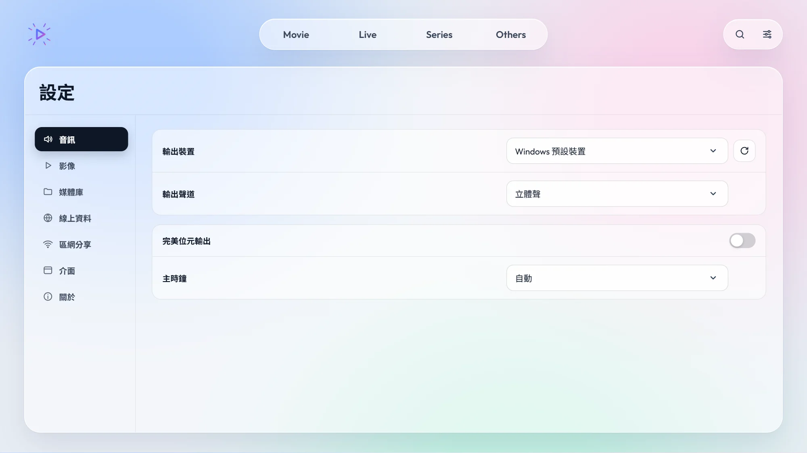</div></figure>
    <div class="card"><dl>
      <div class="row"><dt>輸出裝置</dt><dd>預設跟隨 Windows 預設裝置；也可以指定 DAC、擴大機或耳機。插拔裝置後按旁邊的重新整理鈕更新清單。</dd></div>
      <div class="row"><dt>輸出聲道</dt><dd><span class="opt def">立體聲</span><span class="opt">5.1</span><span class="opt">7.1</span><span class="opt">依裝置自動</span>　多聲道喇叭或擴大機請選對應的聲道數。</dd></div>
      <div class="row"><dt>完美位元輸出</dt><dd>
        <p><span class="opt def">關閉</span>　開啟後以 WASAPI 獨佔模式把音訊原樣送到裝置，不經過 Windows 混音、不做取樣率或格式轉換。播放畫面右上角出現綠色 <b>BIT-PERFECT</b> 標籤即代表成功。</p>
        <p>開啟時音量固定 100%，請用裝置或擴大機調整；其他程式在播放期間無法使用這個裝置發聲。預設關閉，聲音經過 Windows 混音器輸出，可以用播放器的音量列調整，也能和其他程式同時發聲。適合有 DAC 或擴大機、追求原音輸出的使用者開啟。</p></dd></div>
      <div class="row"><dt>主時鐘</dt><dd><span class="opt def">自動</span><span class="opt">音訊優先</span>　決定影像跟著哪個時鐘走。「自動」讓畫面配合螢幕更新率做顯示同步，動態更平順；開啟完美位元輸出時固定為「音訊優先」，以免為了對齊畫面而重取樣聲音。</dd></div>
    </dl></div>
    <div class="note"><svg width="20" height="20" viewBox="0 0 24 24" fill="none" stroke="currentColor" stroke-width="2" stroke-linecap="round" aria-hidden="true"><circle cx="12" cy="12" r="9"/><path d="M12 11v6M12 7.5v.5"/></svg>
      <p>標籤沒有出現 BIT-PERFECT 時，把滑鼠移到標籤上會顯示原因，例如「共享模式」、「取樣率轉換」或「音量不是 100%」。</p></div>
  </section>

  <section class="s" id="a-video" data-title="影像總覽">
    <h2><span class="n">02</span>影像總覽</h2>
    <div class="crumb">設定 <i>›</i> 影像</div>
    <figure><div class="shot">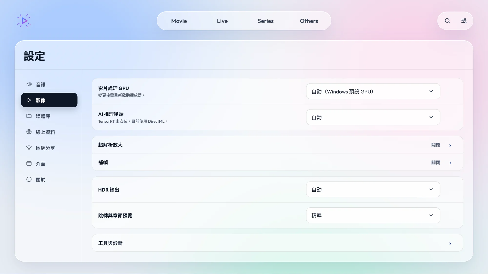</div></figure>
    <div class="card"><dl>
      <div class="row"><dt>影片處理 GPU</dt><dd>有多張顯示卡（例如內顯＋獨顯）時，指定由哪一張解碼、放大與補幀。預設為 Windows 預設 GPU。<b>變更後需重新啟動播放器。</b></dd></div>
      <div class="row"><dt>AI 推理後端</dt><dd><span class="opt def">自動</span><span class="opt">TensorRT</span>　AI 超分與 AI 補幀的運算方式。「自動」使用 DirectML，AMD、Intel、NVIDIA 都能用；NVIDIA 顯示卡安裝 TensorRT 套件後可選 TensorRT（見〈工具與診斷〉）。</dd></div>
      <div class="row"><dt>超解析放大 ›</dt><dd>把低解析度影片放大到螢幕解析度，見下一節。</dd></div>
      <div class="row"><dt>補幀 ›</dt><dd>在原有畫面之間產生中間影格，讓動態更流暢，見〈補幀〉。</dd></div>
      <div class="row"><dt>HDR 輸出</dt><dd><span class="opt def">自動</span><span class="opt">關閉</span><span class="opt">開啟</span>　「自動」：Windows 已開啟 HDR 時直接輸出 HDR，否則把 HDR 影片轉換（tone mapping）成 SDR 顯示。「關閉」：一律轉成 SDR。「開啟」：強制輸出 HDR，只在 Windows 已開啟 HDR 的螢幕上有效。播放器不會更改 Windows 的 HDR 設定。</dd></div>
      <div class="row"><dt>跳轉與章節預覽</dt><dd><span class="opt def">精準</span><span class="opt">關鍵幀</span><span class="opt">不顯示章節</span>　「精準」跳到確切時間；「關鍵幀」跳到最近的關鍵影格，反應較快但位置略有偏差；「不顯示章節」仍精準跳轉，但隱藏章節按鈕與章節列。從章節開頭或重新播放時一律精準。</dd></div>
    </dl></div>
  </section>

  <section class="s" id="a-upscale" data-title="超解析放大">
    <h2><span class="n">03</span>超解析放大</h2>
    <div class="crumb">設定 <i>›</i> 影像 <i>›</i> 超解析放大</div>
    <p class="lead">選好放大方法後，播放中可以用 <kbd>U</kbd> 或控制列的按鈕隨時開關，方便比較效果。</p>
    <figure><div class="shot">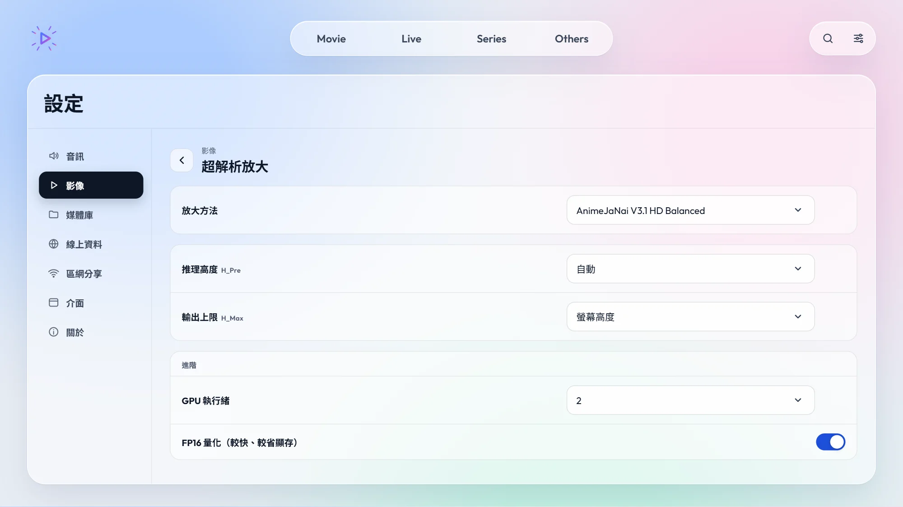</div></figure>
    <div class="card"><div class="gh">放大方法</div><dl>
      <div class="row"><dt>AnimeJaNai（AI）</dt><dd>針對動畫訓練的 AI 模型，例如 V3.1 HD <span class="opt">Balanced</span><span class="opt">Performance</span><span class="opt">Sharp</span>，以及較輕量的 V2 Compact 系列。畫質最好，GPU 負載也最高。</dd></div>
      <div class="row"><dt>其他 AI 模型</dt><dd>Ani4Kv2、HFA2k 等其他風格的動畫放大模型。</dd></div>
      <div class="row"><dt>修復（AI，x1）</dt><dd>Anime1080Fixer：不放大，只修復 1080p 來源的模糊與壓縮痕跡。</dd></div>
      <div class="row"><dt>著色器（GLSL）</dt><dd>Anime4K、FSRCNNX、NNEDI3、AMD FSR、NVIDIA NIS／RTX VSR、CAS 銳化等傳統演算法。負載比 AI 模型低很多，適合較舊的顯示卡或真人影片。</dd></div>
    </dl></div>
    <div class="card"><div class="gh">AI 模型的參數</div><dl>
      <div class="row"><dt>推理高度<span class="tech">H_Pre</span></dt><dd><span class="opt def">自動</span><span class="opt">原始高度</span><span class="opt">1080p</span><span class="opt">720p</span><span class="opt">540p</span>　AI 運算前先把畫面縮放到這個高度。越低越省 GPU，但細節越少。</dd></div>
      <div class="row"><dt>輸出上限<span class="tech">H_Max</span></dt><dd><span class="opt def">螢幕高度</span><span class="opt">2160p</span><span class="opt">1440p</span><span class="opt">1080p</span>　放大結果最高到這個高度。</dd></div>
      <div class="row"><dt>GPU 執行緒</dt><dd>1–3。數字越大吞吐量越高，也越吃顯示記憶體。</dd></div>
      <div class="row"><dt>FP16 量化</dt><dd>以半精度運算，較快、較省顯存，畫質差異通常難以察覺。建議保持開啟。</dd></div>
    </dl></div>
    <div class="note warn"><svg width="20" height="20" viewBox="0 0 24 24" fill="none" stroke="currentColor" stroke-width="2" stroke-linecap="round" stroke-linejoin="round" aria-hidden="true"><path d="M12 3 2 20h20z"/><path d="M12 10v4M12 17v.5"/></svg>
      <p>AI 放大非常耗 GPU。若播放出現卡頓或掉幀，依序嘗試：降低推理高度 → 改用 Performance／Compact 模型 → 改用 GLSL 著色器。按 <kbd>I</kbd> 可在播放資訊中查看掉幀數。第一次使用某個模型時需要先初始化，會等待幾秒。</p></div>
  </section>

  <section class="s" id="a-interp" data-title="補幀">
    <h2><span class="n">04</span>補幀</h2>
    <div class="crumb">設定 <i>›</i> 影像 <i>›</i> 補幀</div>
    <p class="lead">把 24 fps 的影片補成 48、60 甚至更高的影格率，讓平移與動作更流暢。各方法的效果與負載差異很大，可以逐一試看看。</p>
    <figure><div class="shot">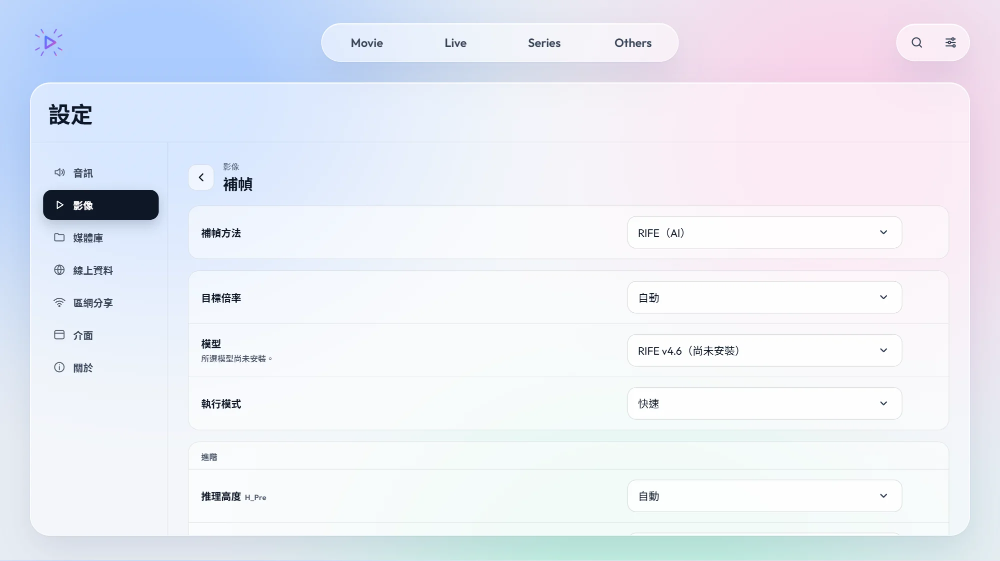</div></figure>
    <div class="card"><div class="gh">補幀方法</div><dl>
      <div class="row"><dt>mpv 平滑</dt><dd>不產生新畫面，只讓影格依螢幕更新率平均顯示，消除 24p 在 60 Hz 螢幕上的頓挫。負載最低；完美位元或「音訊優先」時無法使用。</dd></div>
      <div class="row"><dt>MVTools</dt><dd>傳統的動態估計補幀，主要使用 CPU，不需要 AI 模型。</dd></div>
      <div class="row"><dt>RIFE（AI）</dt><dd>AI 光流補幀，畫面自然，是多數人的首選。</dd></div>
      <div class="row"><dt>DRBA（AI）</dt><dd>針對動畫的 AI 補幀（DistilDRBA），對一拍二、一拍三的動畫處理較好。</dd></div>
      <div class="row"><dt>AMD FRC（硬體）</dt><dd>只在 AMD 顯示卡出現。使用顯示卡內建的補幀硬體，負載很低，固定 2 倍。</dd></div>
    </dl></div>
    <div class="card"><div class="gh">常用參數</div><dl>
      <div class="row"><dt>目標倍率</dt><dd><span class="opt def">自動</span><span class="opt">2×</span><span class="opt">2.5×</span><span class="opt">3×</span><span class="opt">4×</span><span class="opt">5×</span>　「自動」會依螢幕更新率選擇倍率。</dd></div>
      <div class="row"><dt>模型／執行模式</dt><dd>RIFE 可選模型版本與 <span class="opt">快速</span><span class="opt">品質</span>；DRBA 可選模型與 Turbo 等級。標示「尚未安裝」的模型無法使用。</dd></div>
      <div class="row"><dt>推理高度<span class="tech">H_Pre</span></dt><dd>AI 補幀前先把畫面縮到這個高度再運算，降低可以大幅減輕負載。</dd></div>
      <div class="row"><dt>場景切換偵測</dt><dd><span class="opt">關閉</span><span class="opt">亮度差</span><span class="opt">MVTools（CPU）</span>　在換鏡頭時不補幀，避免出現兩個畫面混在一起的殘影。</dd></div>
      <div class="row"><dt>MVTools／AMD FRC 進階</dt><dd>MVTools 有「二次分析」與「區塊模式」；AMD FRC 有品質 <span class="opt">自動</span><span class="opt">低</span><span class="opt">高</span><span class="opt">超高</span> 與動態搜尋 <span class="opt">原生</span><span class="opt">效能</span>。</dd></div>
    </dl></div>
    <div class="note"><svg width="20" height="20" viewBox="0 0 24 24" fill="none" stroke="currentColor" stroke-width="2" stroke-linecap="round" aria-hidden="true"><circle cx="12" cy="12" r="9"/><path d="M12 11v6M12 7.5v.5"/></svg>
      <p>補幀的來源上限是 32 fps，高於這個影格率的影片（例如 60 fps）不會再補。輸出影格率若不能整除螢幕更新率，畫面會有不均勻的節奏；在 144、96、48 Hz 或開啟 VRR 的螢幕上最平順。超解析放大與補幀可以同時開啟，但負載相加，請留意掉幀。</p></div>
  </section>

  <section class="s" id="a-tools" data-title="工具與診斷">
    <h2><span class="n">05</span>工具與診斷</h2>
    <div class="crumb">設定 <i>›</i> 影像 <i>›</i> 工具與診斷</div>
    <div class="card"><dl>
      <div class="row"><dt>TensorRT（NVIDIA）</dt><dd>
        <p>NVIDIA 顯示卡可以改用 TensorRT 執行 AI 超分與補幀，速度通常比 DirectML 快。播放器預設沒有附帶，需要自行安裝：</p>
        <ol>
          <li>從 mpv-lazy 20260510 的 vsNV 套件複製 <code>vs-plugins\vstrt.dll</code> 與整個 <code>vs-plugins\vsmlrt-cuda\</code> 到安裝資料夾的 <code>vs-runtime\vs-plugins\</code>。</li>
          <li>把 <code>vs-plugins\models\</code> 裡的 <code>drba\*_ap.onnx</code>、<code>rife\</code>、<code>rife_v2\</code> 放到 <code>vs-runtime\vs-plugins\models\</code>。</li>
          <li>NVIDIA 驅動需 580 版以上；完成後重新啟動播放器，再到〈影像總覽〉把 AI 推理後端改為 TensorRT。</li>
        </ol>
        <p>按「開啟 DLL 資料夾」會直接打開要放檔案的位置。第一次使用每個模型時需要建置引擎，播放可能停頓數分鐘，之後就不會再等待。</p></dd></div>
      <div class="row"><dt>匯出診斷資料</dt><dd>把系統、GPU、影音設定與紀錄檔整理成一個檔案，回報問題時附上即可。不包含媒體庫名稱與資料夾路徑、TMDB／Bangumi 金鑰與觀看進度；但紀錄檔裡會有最近播放的影片檔名與路徑。</dd></div>
    </dl></div>
  </section>

  <section class="s" id="a-online" data-title="線上資料">
    <h2><span class="n">06</span>線上資料（海報、簡介與比對）</h2>
    <div class="crumb">設定 <i>›</i> 線上資料</div>
    <p class="lead">開啟後，播放器會依片名到 TMDB、AniList、Bangumi 等網站查詢作品，下載海報、簡介、角色與單集劇照。影片檔本身不會被修改或上傳。</p>
    <h3>運作方式</h3>
    <div class="flow">
      <div class="flow-step"><b><span>1</span>先讀本機資料</b><p>影片旁已有的 Kodi／Emby／Jellyfin 資料會先被採用：<code>.nfo</code>（movie.nfo、tvshow.nfo）、<code>poster.jpg</code>、<code>fanart.jpg</code> 等圖片，以及影片檔內嵌的封面。</p></div>
      <div class="flow-step"><b><span>2</span>辨識是哪部作品</b><p>用 .nfo 的原文片名，沒有時用資料夾或檔名去查。中文片名會先在 Bangumi 找到對應的日文原名，再到 AniList 確認。<b>只有官方名稱完全相同（知道年份時年份也要相符）才會自動配對</b>，否則列為「待選擇」，由你挑選。</p></div>
      <div class="flow-step"><b><span>3</span>從多個網站補齊資料</b><p>每個欄位依「資料來源與欄位優先順序」逐一取用，前面的網站缺少的才由後面的補上：TMDB 提供繁體中文簡介、單集標題與劇照；Bangumi 提供中文片名與角色中文名；AniList 提供評分、角色、聲優與製作人員；Kitsu 補 TMDB 沒有的單集縮圖。</p></div>
      <div class="flow-step"><b><span>4</span>存在本機</b><p>配對結果與下載的資料存在安裝資料夾的 <span class="path">data</span> 內（例如 <span class="path">datanilist.json</span>），之後開啟不用重新查詢。影片檔與影片資料夾都不會被修改。</p></div>
    </div>
    <ul>
      <li><b>第一次會比較慢</b>：為了不超過各網站的查詢限制，播放器會間隔一兩秒才查下一部作品。媒體庫很大時，第一次比對可能需要幾分鐘，可以邊比對邊使用。</li>
      <li><b>配錯或沒配到</b>：在作品頁右上的 ⋮ 選「選擇比對」或「修改比對」，從候選中挑正確的作品，或直接輸入片名搜尋。手動選的結果不會被之後的自動比對覆蓋。</li>
      <li><b>每一季可以各自指定資料來源</b>：動畫常有續作編號延續、或在 TMDB 上歸在另一部作品下的情況。影集作品頁的 ⋮ 選單可以替某一季指定 TMDB／Bangumi／AniList 的條目與集數偏移，或只用本機的 .nfo 與檔名。</li>
      <li><b>待複查與資料集建議</b>：播放器不確定的配對會列在「待複查」。另外會參考 bangumi-data 的跨站對應資料提出建議，但只是建議，接受前不會寫入任何連結。</li>
      <li><b>使用的資料庫</b>：在「資料來源與欄位優先順序」可以停用不想用的網站（AniList 一定會使用）。停用的網站不會被查詢；沒有填 TMDB 金鑰時也不會查詢 TMDB。</li>
    </ul>

    <h3>設定項目</h3>
    <figure><div class="shot">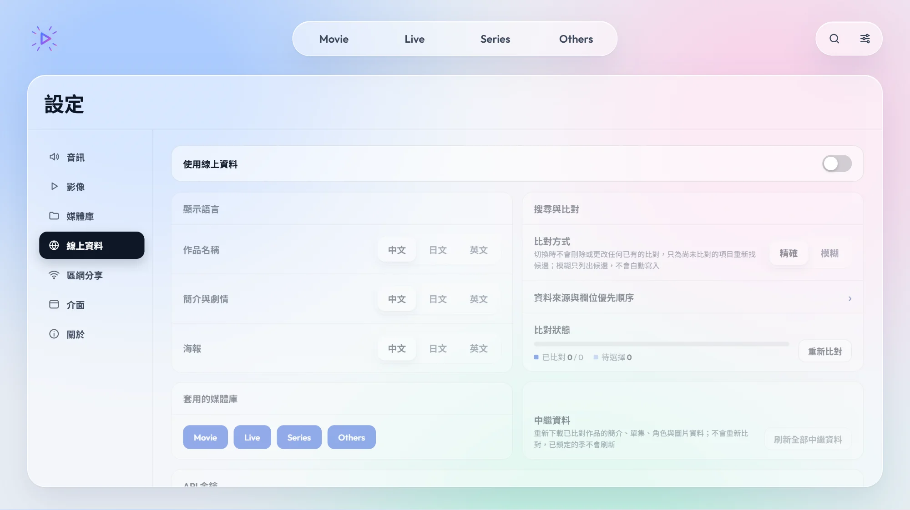</div></figure>
    <div class="card"><dl>
      <div class="row"><dt>顯示語言</dt><dd>作品名稱、簡介與劇情、海報各自選 <span class="opt">中文</span><span class="opt">日文</span><span class="opt">英文</span>。</dd></div>
      <div class="row"><dt>套用的媒體庫</dt><dd>只對亮起的媒體庫查詢線上資料，例如家庭影片的媒體庫可以關掉。</dd></div>
      <div class="row"><dt>比對方式</dt><dd><span class="opt">精確</span><span class="opt">模糊</span>　「精確」只在把握很高時自動配對；「模糊」只列出候選讓你挑選，不會自動寫入。切換時不會更改已經配對好的作品。</dd></div>
      <div class="row"><dt>資料來源與欄位優先順序 ›</dt><dd>決定名稱、簡介、海報等每個欄位優先採用哪個網站的資料。</dd></div>
      <div class="row"><dt>比對狀態</dt><dd>顯示已比對與待選擇的作品數。「重新比對」只會替尚未比對的作品重新找候選。</dd></div>
      <div class="row"><dt>待複查 ›</dt><dd>播放器不確定的配對會放在這裡，請逐一選擇正確的作品，或按「忽略此建議」。</dd></div>
      <div class="row"><dt>中繼資料</dt><dd>「刷新全部中繼資料」重新下載已配對作品的簡介、單集、角色與圖片；不會重新比對，手動鎖定的季也不會被刷新。</dd></div>
      <div class="row"><dt>API 金鑰</dt><dd>
        <p><b>TMDB</b>：電影與影集的中文片名、簡介、海報都來自 TMDB，建議填入。到 <a href="https://www.themoviedb.org/settings/api" target="_blank" rel="noopener">themoviedb.org 的帳號設定 › API</a> 免費申請。</p>
        <p><b>Bangumi</b>：可不填；不填時以免登入方式查詢動畫資料（不含部分限制級條目）。</p></dd></div>
    </dl></div>
  </section>

  <section class="s" id="a-lan" data-title="區網分享">
    <h2><span class="n">07</span>區網分享<span class="locked-badge">尚未開放</span></h2>
    <div class="crumb">設定 <i>›</i> 區網分享</div>
    <p class="lead">未來可以讓手機或其他電腦透過區域網路觀看這台電腦的媒體庫。目前版本尚未開放：所有選項都是停用狀態，播放器不會開啟任何網路連接埠，也不會被區網中的其他裝置找到。</p>
    <figure><div class="shot">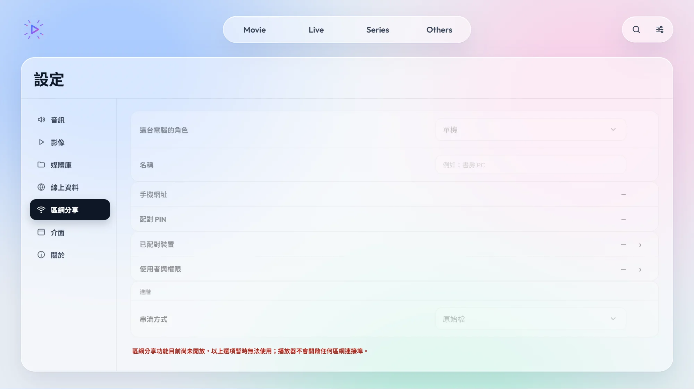</div></figure>
  </section>

  <section class="s" id="a-files" data-title="檔案與資料位置">
    <h2><span class="n">08</span>檔案與資料位置</h2>
    <p class="lead">預設安裝在 <span class="path">%LOCALAPPDATA%\Programs\SceneArc</span>，所有設定與資料都在這個資料夾內，方便備份或搬到另一台電腦。</p>
    <div class="card"><dl>
      <div class="row"><dt class="path">config.json</dt><dd>所有設定：媒體庫、音訊、影像、線上資料。</dd></div>
      <div class="row"><dt class="path">data\</dt><dd>播放進度、介面偏好、線上資料快取、縮圖與字型。備份時連同 <span class="path">config.json</span> 一起複製即可。</dd></div>
      <div class="row"><dt class="path">data\fonts\</dt><dd>放入字幕需要但電腦沒有安裝的字型。</dd></div>
      <div class="row"><dt class="path">data\logs\</dt><dd>播放與錯誤紀錄，回報問題時可能需要。</dd></div>
      <div class="row"><dt class="path">vs-runtime\</dt><dd>AI 超分與補幀的執行環境與模型（VapourSynth、ONNX 模型）。請勿刪改，TensorRT 套件也裝在這裡。</dd></div>
    </dl></div>
    <div class="note warn"><svg width="20" height="20" viewBox="0 0 24 24" fill="none" stroke="currentColor" stroke-width="2" stroke-linecap="round" stroke-linejoin="round" aria-hidden="true"><path d="M12 3 2 20h20z"/><path d="M12 10v4M12 17v.5"/></svg>
      <p>請不要把 SceneArc 安裝到 <span class="path">C:\Program Files</span>：那裡一般使用者無法寫入，設定與播放進度會存不下來。</p></div>
  </section>

  <section class="s" id="a-about" data-title="關於與授權">
    <h2><span class="n">09</span>關於與授權</h2>
    <div class="crumb">設定 <i>›</i> 關於</div>
    <p>SceneArc 以 <b>GPL-3.0</b> 授權發布，不附任何擔保。mpv、FFmpeg、VapourSynth、AI 模型與著色器各依其原授權使用；部分 AI 模型採 CC BY-NC 系列授權，僅限非商業用途。完整清單見安裝資料夾中的 <span class="path">LICENSE</span> 與 <span class="path">THIRD_PARTY_NOTICES.md</span>，或 <b>設定 › 關於 › 授權與資料來源</b>。</p>
    <p>本產品使用 TMDB API，但未經 TMDB 認可或認證。作品資料另來自 AniList、Bangumi 番組計劃、Kitsu 與 bangumi-data。</p>
    <div class="next"><button type="button" data-goto="basic">← 回到基礎說明</button></div>
  </section>
</div>

  </div>
</main>
<p class="foot">SceneArc v0.1.0-beta 使用說明 · 截圖中的作品、海報與劇照皆為虛構示範資料（程式產生的圖像），實際內容依你的媒體庫而定。</p>
</div>

<script>
(() => {
  const store = {
    get(k) { try { return localStorage.getItem(k); } catch { return null; } },
    set(k, v) { try { localStorage.setItem(k, v); } catch { /* storage blocked */ } },
  };
  const root = document.documentElement;
  // Theme: system by default; the button pins light or dark.
  const saved = store.get('guide-theme');
  if (saved === 'light' || saved === 'dark') root.dataset.theme = saved;
  const isDark = () => root.dataset.theme ? root.dataset.theme === 'dark' : matchMedia('(prefers-color-scheme: dark)').matches;
  document.getElementById('theme-btn').addEventListener('click', () => {
    root.dataset.theme = isDark() ? 'light' : 'dark';
    store.set('guide-theme', root.dataset.theme);
  });

  const tabs = [...document.querySelectorAll('.cat')];
  const panels = { basic: document.getElementById('basic'), advanced: document.getElementById('advanced') };
  const toc = document.getElementById('toc');
  let current = null, spy = null;

  function buildToc(tab) {
    const sections = [...panels[tab].querySelectorAll('section.s')];
    toc.innerHTML = sections.map((s, i) => '<li><a href="#' + s.id + '"><span class="n">' + String(i + 1).padStart(2, '0') + '</span>' + s.dataset.title + '</a></li>').join('');
    const links = [...toc.querySelectorAll('a')];
    let last = -1;
    spy = () => {
      // The section whose heading has passed the top bar is the current one.
      let on = 0;
      sections.forEach((sec, i) => { if (sec.getBoundingClientRect().top <= 140) on = i; });
      if (on === last) return;
      last = on;
      links.forEach((a, i) => a.classList.toggle('on', i === on));
      // Narrow screens show the list as a horizontal strip: keep the current entry in view (never scrolls the page).
      if (toc.scrollWidth > toc.clientWidth) toc.scrollLeft = links[on].offsetLeft - toc.clientWidth / 2 + links[on].offsetWidth / 2;
    };
    spy();
  }
  function show(tab, scrollTop) {
    if (!panels[tab]) tab = 'basic';
    if (tab !== current) {
      current = tab;
      tabs.forEach((b) => b.setAttribute('aria-selected', String(b.dataset.tab === tab)));
      Object.entries(panels).forEach(([k, p]) => { p.hidden = k !== tab; });
      buildToc(tab);
    }
    if (scrollTop) window.scrollTo({ top: 0 });
  }
  tabs.forEach((b) => b.addEventListener('click', () => { history.replaceState(null, '', '#' + b.dataset.tab); show(b.dataset.tab, true); }));
  document.querySelectorAll('[data-goto]').forEach((b) => b.addEventListener('click', () => {
    history.replaceState(null, '', '#' + b.dataset.goto); show(b.dataset.goto, true);
  }));
  // Arrow keys move between the two tabs, like the player's category pill.
  document.querySelector('.cats').addEventListener('keydown', (e) => {
    if (e.key !== 'ArrowLeft' && e.key !== 'ArrowRight') return;
    const i = tabs.findIndex((b) => b.dataset.tab === current);
    const next = tabs[(i + (e.key === 'ArrowRight' ? 1 : tabs.length - 1)) % tabs.length];
    next.focus(); next.click();
  });
  // #advanced, or a section id such as #a-upscale, opens the right tab.
  function fromHash() {
    const id = decodeURIComponent(location.hash.slice(1));
    if (panels[id]) { show(id, true); return; }
    const target = id && document.getElementById(id);
    const tab = target && target.closest('.tab');
    show(tab ? tab.id : (current || 'basic'));
    if (target && tab) requestAnimationFrame(() => target.scrollIntoView());
  }
  let queued = false;
  window.addEventListener('scroll', () => { if (queued) return; queued = true; requestAnimationFrame(() => { queued = false; if (spy) spy(); }); }, { passive: true });
  window.addEventListener('hashchange', fromHash);
  fromHash();
})();
</script>
</body>
</html>
